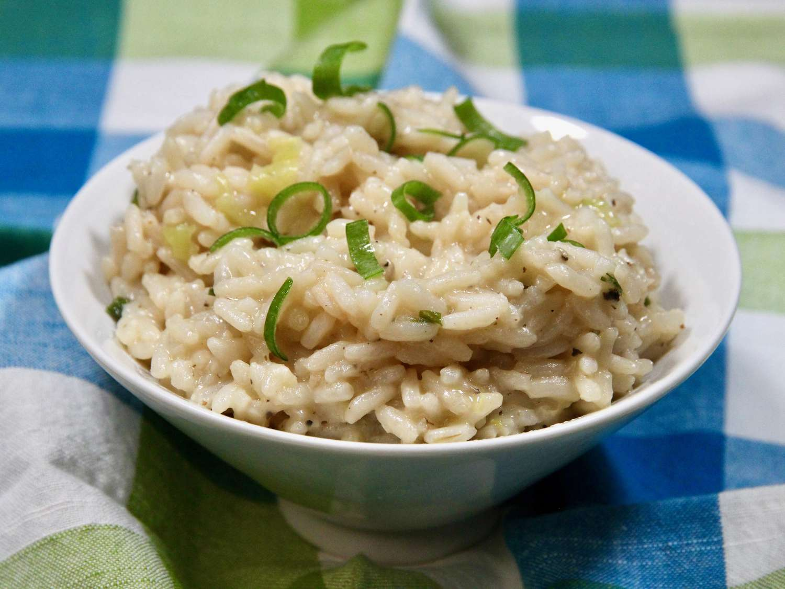

Risotto

Description
Risotto is cooked the slow and painful way, but-oh so worth it! Perfect as an Italian main dish or side dish that complements grilled meats and chicken dishes very well. Check the rice by biting into it. It should be slightly al dente (or resist slightly to the tooth but not be hard in the center).
Ingredients
- Broth
- Olive Oil
- Rice
- Butter
- Parmesan Cheese
- Chives
- Shallots and Mushrooms
Steps to Make
- Keep the broth hot the whole way through. Measure out a little more into the broth pot than the recipe says to make up for evaporation as it sits.
- Toast the grains in hot oil until they start to turn translucent around the edges. This could take a couple of minutes. Stir continuously during this process.
- Stir risotto as it simmers
- Keep the broth hot and the risotto at a low simmer throughout.
- Risotto is done when the rice is al dente: firm but not crunchy when you bite into it. It should not be as dry as steamed rice, but should have enough liquid to make it loose. Add just a touch more broth if needed before stirring in the butter and Parmesan cheese.
- Risotto waits for no one. It will continue to cook as it sits even when it's off the heat, so be prepared to dish it up right away.
Home Page